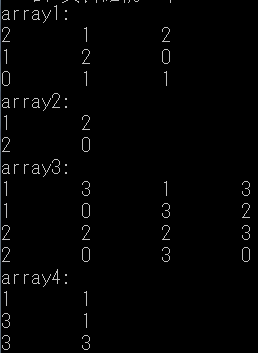

public class compute_496631580{
public static void main(String args[]){ //用陣列儲存多項式係數
int[] a = {1,1,1};
int[] b = {1,-3,-1};
Compute X = new Compute();
System.out.println("compute(a,1) = " +X.compute(a,1));
System.out.println("compute(b,2) = " +X.compute(b,2));}
public int compute(int c[] , int n){
int y;//答案值
if(c[1] == 1){ //以兩函數係數不同的地方來判斷該代入何者
y = n*n*c[0]+n*c[1]+c[2];// x^2 + x + 1
return y;}
else{
y = n*n*n*c[0]+n*c[1]+c[2];//x3 -3x -1
return y;}
}
}
import java.util.Scanner;
import java.io.File;
import java.io.FileNotFoundException;
public class Exam_1{
public static void check(String str){
char y = str.charAt(0);
char z;
int a;
for(a=0 ; a< str.length() ; a++){
z = str.charAt(a);
if(z==y)
System.out.print(a + ",");}
System.out.println("");
String str1 = str.substring(0,str.length()/2); //儲存前半段字串
String str2 = str.substring(str.length()/2,str.length()); //後半段
StringBuffer buf = new StringBuffer(str2);
String str3 = new String(buf.reverse()); //儲存反轉後的後半段字串
if(str1.equals(str3))
System.out.println("左右對稱");
else
System.out.println("左右不對稱");
if(str1.equals(str2))
System.out.println("前後相同");
else
System.out.println("前後不相同");}
public static void main( String args[] )throws FileNotFoundException{
Exam_1 x = new Exam_1();
System.out.printf( "請輸入一個有偶數個英文字母的字串\n");
Scanner input = new Scanner( System.in );
String s;
s = input.next();
x.check(s);
Scanner input1 = new Scanner( new File("1.txt") );
String t;
t = input1.next();
x.check(t);}
}
/***************************************
* 這是一個 Account 類別
***************************************/
class Account {
private String name;
private String number;
private int balance;
/********************************
* 帳戶
********************************/
Account(String nameIn, String numberIn, int balanceIn ){
balance = balanceIn; //餘額
name = nameIn; //帳戶姓名
number = numberIn;} //帳號
/********************************
* 存款 提款 轉帳
********************************/
public void deposit( int amount ){
balance= balance + amount;} //存款
public void withdraw(int amount){
balance = balance - amount;} //提款
public String getName(){
return name;}
public String getNumber(){
return number;}
public int getBalance(){
return balance;}
public void transfer(Account x, int amount){
balance = balance - amount;
x.deposit(amount);} //轉帳
public void display(){
System.out.print("姓名：" + getName() + "帳號：" + getNumber() + "餘額：" + getBalance() );
System.out.println();}
}
public class Account_Test{
public static void main(String args[]){
Account firstAccount = new Account("魅", "31580", 67);
Account secondAccount = new Account("艾", "67", 31580);
firstAccount.display();
secondAccount.display();
secondAccount.transfer(firstAccount, 100);
firstAccount.withdraw(50);
firstAccount.display();
secondAccount.display();}
}

public class Exam_3{
public int transform(int a[][], int zero[][]){
int n, b,x=0;
for (n = 0; n < a.length; n++){
for (b = 0; b < a[n].length; b++){
if(a[n][b] == 0){
x+=1;
zero[x-1][0]=n;
zero[x-1][1]=b;}
}
}
return x;
}
public static void main(String[] args){
int array1[][] = new int[3][3];
int array2[][] = new int[9][2];
int f,e;
int g,h;
for(g=0 ; g<=2 ; g++){
for(h=0 ; h<=2 ; h++){
array1[g][h]=(int)(Math.random()*3);}
}
Exam_3 mm = new Exam_3();
mm.transform(array1, array2); //呼叫 transform(array1, array2) 方法
System.out.println("array1:");
for(f=0 ; f<=2 ; f++){
for(e=0 ; e<=2 ; e++)
System.out.print(array1[f][e] + "\t");
e = 0;
System.out.println();}
int i,j;
int k = mm.transform(array1,array2);
System.out.println("array2:");
for (i = 0; i < k; i++){
for (j = 0; j <= 1; j++){
System.out.print(array2[i][j] + "\t");}
System.out.println();}
//利用 transform傳回的值，列印 array2 中所有用來代表 array1 值為 0 的元素之列索引及欄索引。
int array3[][] = new int[4][4];
int array4[][] = new int[16][2];
int c,d;
for(g=0 ; g<=3 ; g++){
for(h=0 ; h<=3 ; h++){
array3[g][h]=(int)(Math.random()*4);}
}
mm.transform(array3, array4); //transform(array3, array4) 方法
System.out.println("array3:");
for (c = 0; c <= 3; c++){
for (d = 0; d <= 3; d++)
System.out.print(array3[c][d] + "\t");
d = 0;
System.out.println();}
int y,z;
int l = mm.transform(array3,array4);
System.out.println("array4:");
for (y = 0; y < l; y++){
for (z = 0; z <= 1; z++){
System.out.print(array4[y][z] + "\t");}
System.out.println();}
//利用 transform傳回的值，列印 array4 中所有用來代表 array3 值為 0 的元素之列索引及欄索引。
}
}
public class Exam_4{
public void multiply(int a[ ], int b[ ], int c[ ]){
//將a、b所代表的2個多項式相乘產生的多項式的係數存在c陣列中。
int d;
int e;
for(d=0 ; d<=2 ; d++){
for(e=0 ; e<=2 ; e++){
c[d+e] += a[d] * b[e];}
//註：array3所代表的多項式的最大次方為 array1 的最大次方與 array2 的最大次方之和
e=0;}
}
public static void main(String args[]){
Exam_4 x = new Exam_4();
int array1[] = {1,0,1};
int array2[] = {2,3,0};
System.out.printf("array1: %d+%d*x^1+%d*x^2\n", array1[0], array1[1], array1[2]);
System.out.printf("array2: %d+%d*x^1\n", array2[0], array2[1]);
int array3[] = new int [5];
x.multiply(array1, array2, array3); //呼叫 multiply(array1, array2, array3)
System.out.printf("array3: %d+%d*x^1+%d*x^2+%d*x^3\n",array3[0],array3[1],array3[2],array3[3]);
}
}